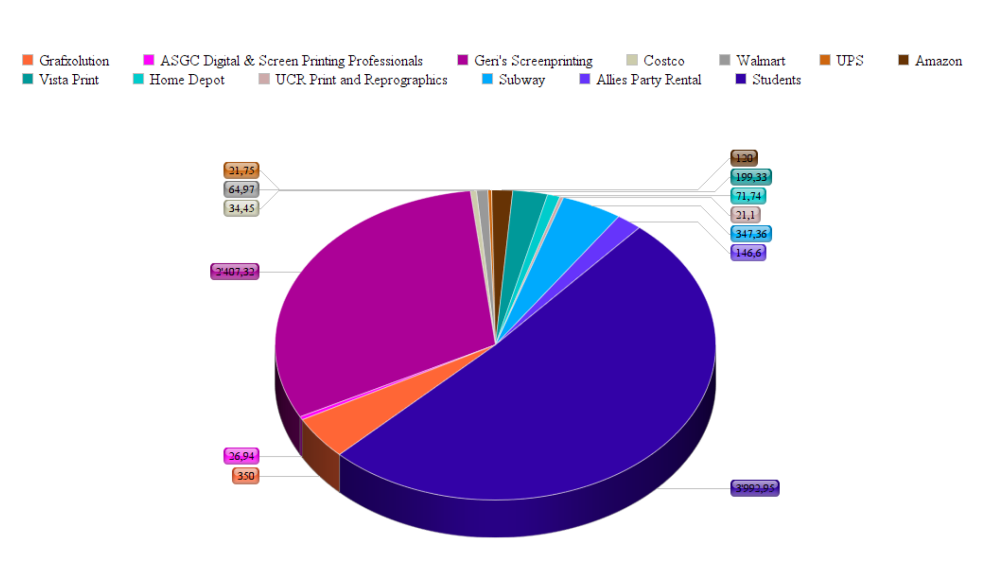
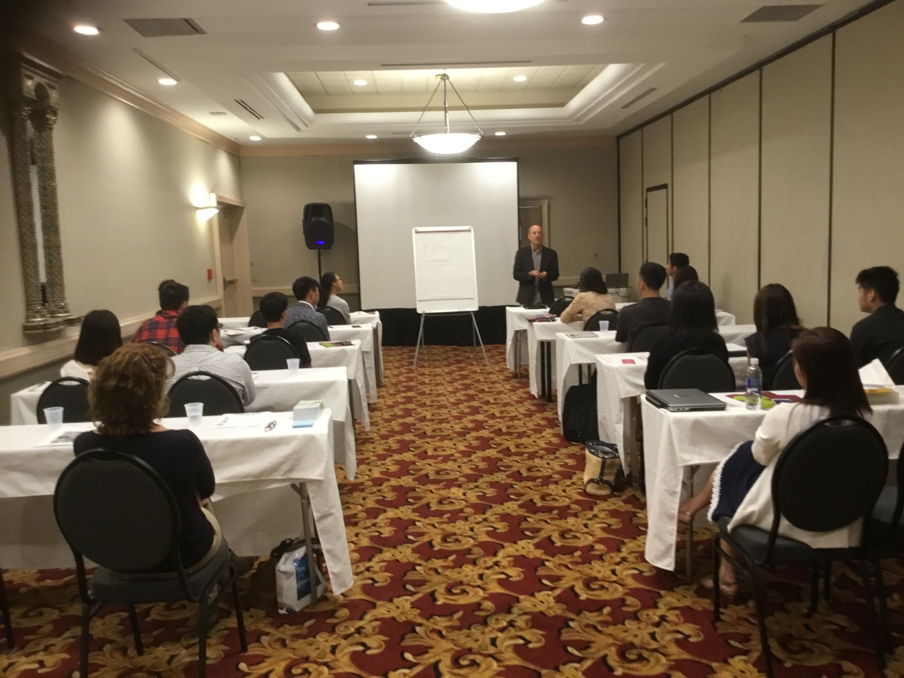
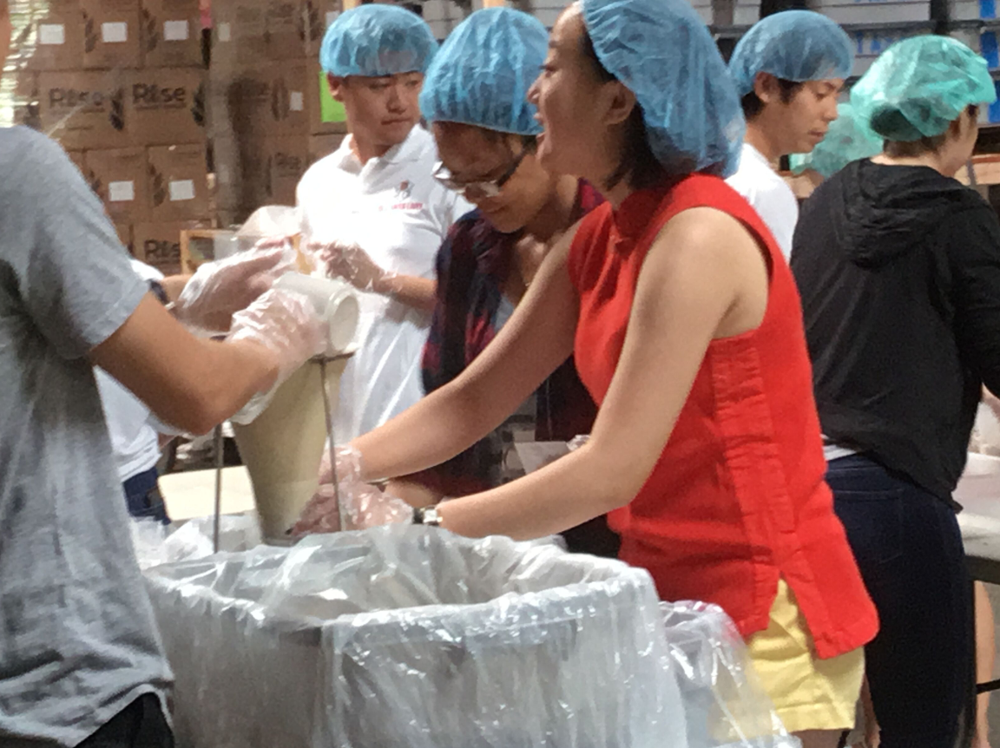
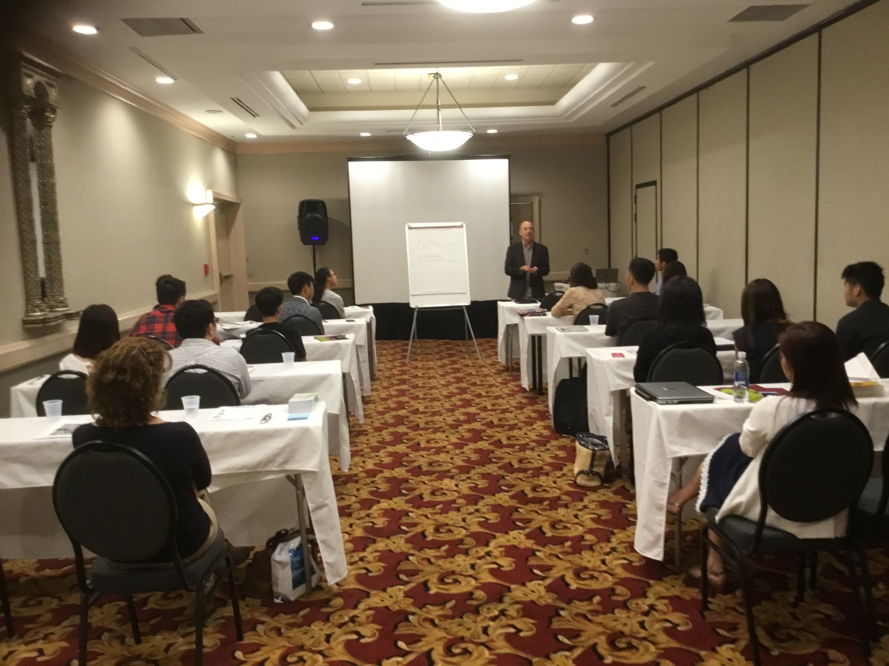
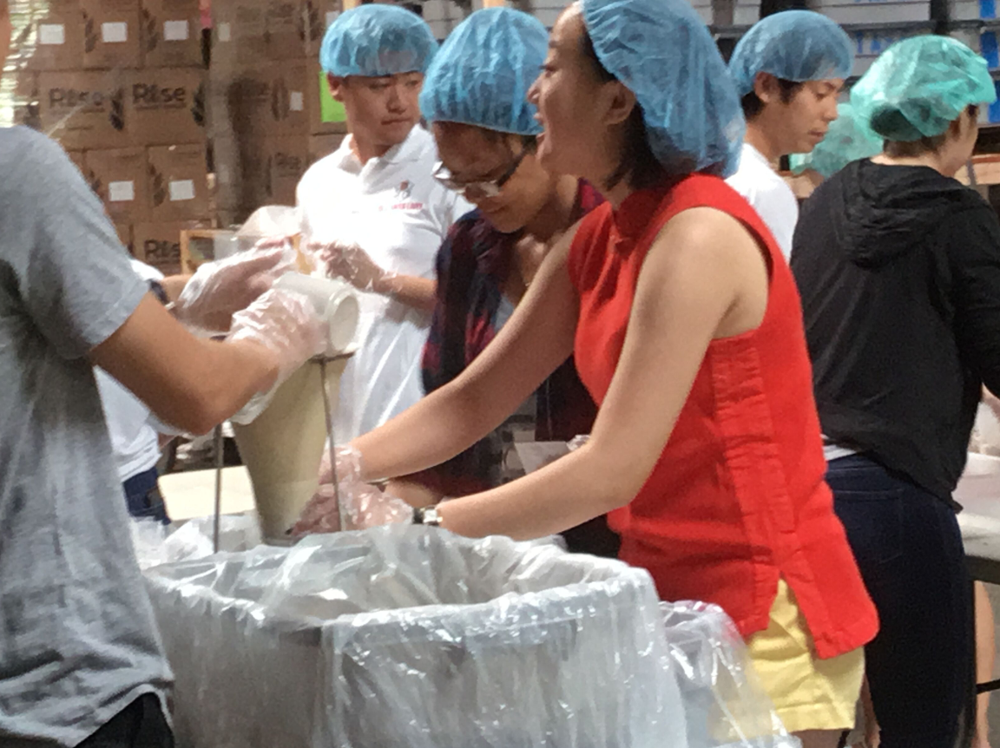

Mandy Tsai
Mandy Tsai is a first year student at the University of California, Riverside. She graduated from Walnut High School in May of 2019 with a high GPA. During the summer of 2019, she went to study abroad in Taipei, Taiwan at the National Taiwan Normal University to further her bilingual skills in Chinese and received a Certificate of completion in proficient Mandarin Chinese. Upon her entrance to the School of Business at the University of California, Riverside, she intends to enter a concentration in finance.
In high school, she participated in multiple outreach organizations and business clubs that allowed her to strengthen her public speaking skills as well as interpersonal skills. Placing at the section level for Personal Finance and Business Procedures in the section level of Future Business Leaders of America — Phi Beta Lamba, she has attended and competed at the state level leadership conference. As the Vice Chair for the Walnut Youth Advisory Commission, she also worked closely with members of the city council in Walnut to put together city wide events, such as the annual Family Festival (a day-long event at the city park that showcases multiple school clubs and organizations in a parade as well as small mom-and-pop shops around the city) and Family Science Night (an interactive city event held in the senior center that generates revenue and stimulates city-wide pride). During her time as a member of the One World Youth Leader Network Organization, she research women’s education extensively and put together a presentation, which she later presented in front of world politics leaders and significant charity sponsors at the United Nations Headquarters in New York.
Experience
Future Business Leaders of America
• Participated in competition in section and state level
• Placed at section level for Personal Finance
• Attended multiple conferences and has vast experience with networking
Vice Chair
• Worked with Teen Center to organize a city science night at the Senior Center
• Headed the committee that organized an anti-bullying day at Teen Center
One World Youth Leader Network Conference
• Researched education in third world countries extensively to put together powerpoint
• Lead a presentation at the United Nations headquarters
• Created educational content to help promote women's education in third world countries
Education
Walnut High School
National Taiwan Normal University
University of California Riverside
Portfolio





